How to use nymph
nymph turns a short text file describing a chart into a picture: plots, dashboards, UML diagrams, flowcharts, Gantt and Sankey charts, user-interface mockups. This app opens, views and edits those charts in your browser, with nothing to install. Your files stay in the browser.
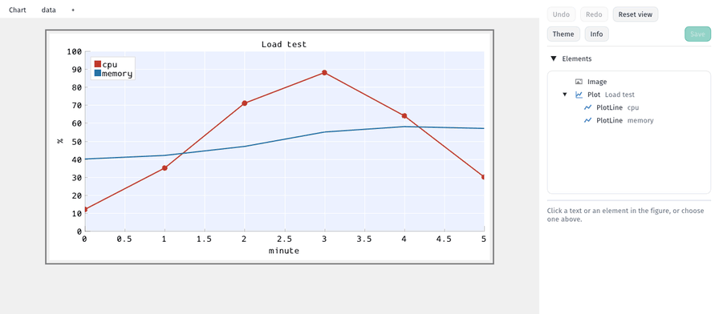
1. The file behind every chart
A nymph chart is a small YAML
file: what to draw (root), its parts (children) and the numbers
(data). This one is the line chart in the pictures below:
root:
type: Plot
title: Load test
x_label: minute
children:
- {type: PlotLine, label: cpu, xs: $minute, ys: $cpu}
- {type: PlotLine, label: memory, xs: $minute, ys: $mem}
data: |
minute, cpu, mem
0, 12, 40
1, 35, 42
2, 71, 47
You never have to write it by hand here: everything you change in the app is written into
this file for you. A PNG saved by nymph carries its YAML inside, so the picture itself can be
opened again and edited. AI agents (Claude, Cursor, Gemini) write this format well, and the
command-line tool
turns it into a PNG: nymph chart.yaml.
2. Open a chart
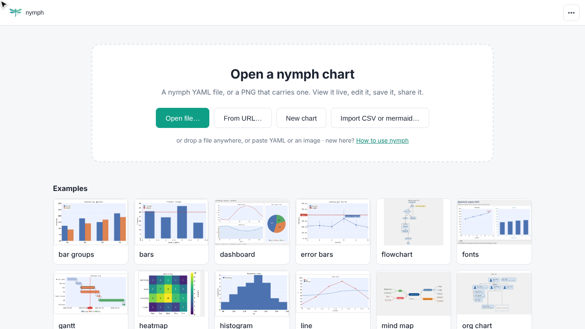
| How | What it opens |
|---|---|
| Open file… (Ctrl+O) | A .yaml file, or a PNG that nymph wrote. |
| Drag and drop | A file dropped anywhere on the page. |
| Paste | YAML text from the clipboard. |
| From URL… | A file on the web, such as a file page on GitHub. |
| Examples | A chart of every kind, to look at or start from. |
| Recent | The last charts you opened in this browser. |
Try it: open the line chart example
3. Start a new chart
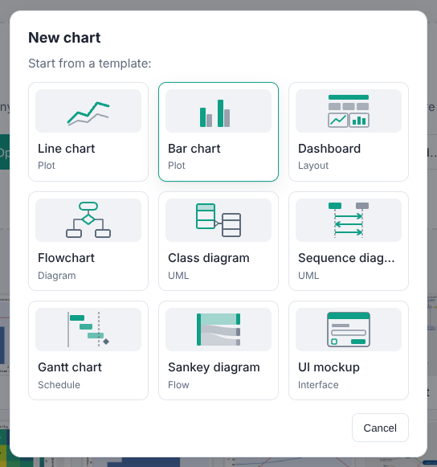
New chart starts from a template of each family: plots, a dashboard, a flowchart, class and sequence diagrams, a Gantt chart, a Sankey diagram and a UI mockup. The template opens in the editor, ready to change.
Got the numbers in a spreadsheet already? Save them as CSV and use Import CSV or mermaid…. A short wizard asks for the chart type, which columns to draw and the look (title, fonts, colours), with a live preview at each step. It also reads mermaid diagrams and turns them into nymph charts.
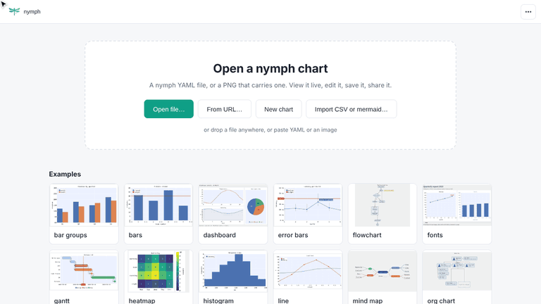
4. Look at a chart
A chart opens in View. It is live, not a flat picture: hover a plot to read the values under the pointer, turn the mouse wheel (or pinch) to zoom, drag to move around, and double-click to fit the whole chart again.
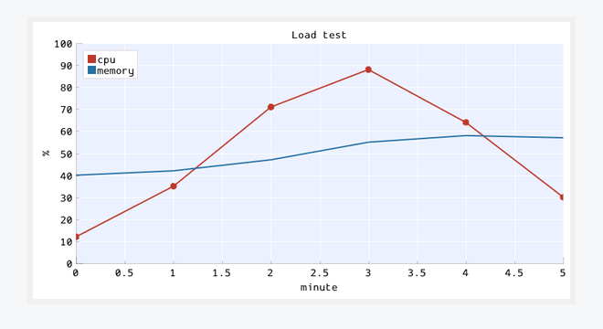
On a phone or tablet the app shows charts only (open, view, share, download). Editing needs a computer with a mouse and keyboard.
5. Edit a chart
Press Edit in the top bar (or the E key). The editor shows the chart on the left and a panel on the right:
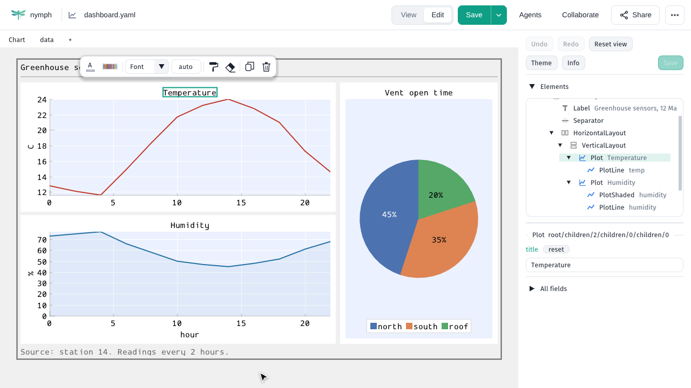
- Click a text (a title, an axis label, a legend, a box in a diagram) to select it. Its field appears at the top of the panel: type there and the chart follows.
- Click an empty part of a plot or diagram to select the whole of it; All fields lists everything that can be set on it.
- The Elements list shows every part of the chart as a tree: click one to select it, even if it is hard to click in the chart.
- Undo and Redo (Ctrl+Z, Ctrl+Y) take back any change. reset next to a field puts it back to its default.
- Dragging still moves the chart and the wheel still zooms; Reset view fits it again.
Try it: edit the line chart example
6. Colours, fonts and themes
A small toolbar floats next to whatever is selected, with the changes made most often: text colour, the colour scheme of a plot, font and text size, line and fill colours, and the shape of diagram boxes. At its end, copy style (the next thing you click takes the same colours and text style), clear style, Duplicate and Delete.
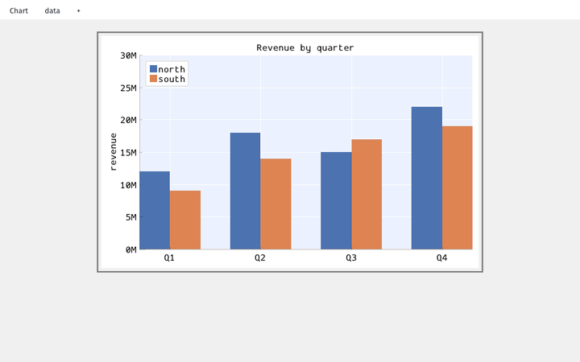
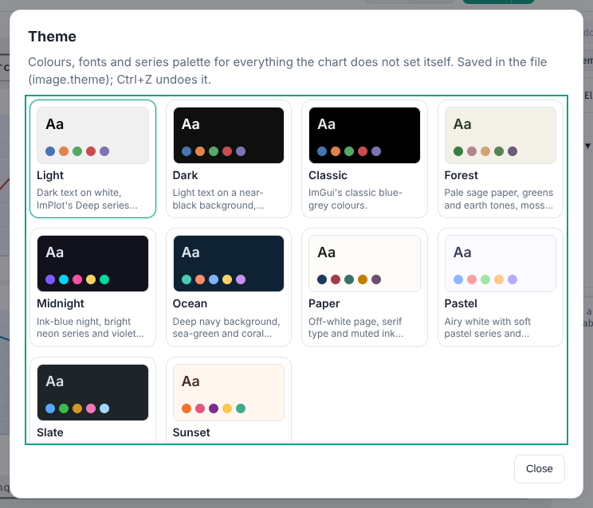
A theme changes the whole chart at once: background, fonts and the colours of every series and diagram. Press Theme in the panel (or ⋯ > Theme…). In Edit it is written into the file, and Undo takes it back; in View it is only a preview.
The ⋯ menu also switches the app itself between light and dark.
7. Add and remove parts
Right-click a part of the chart (or an entry of the Elements list) to add something: Add child puts a new part inside it (a line in a plot, a box in a flowchart), Add chart below and Add chart to the right put a new chart next to it. The menu offers only what fits there. To remove a part, select it and press Delete (or the bin on the toolbar).
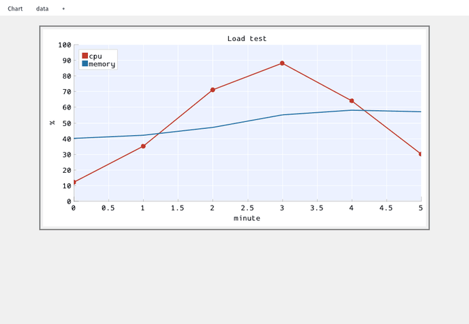
8. Change the data
The tabs over the chart hold its data tables, next to Chart. A table is a grid: click a cell and type, add rows and columns, and rename a column in its header. The chart follows when you go back to it. Import CSV replaces a table with a file, Paste CSV with the clipboard (copied from a spreadsheet, for example), and Export CSV saves it. The + tab adds a new table.
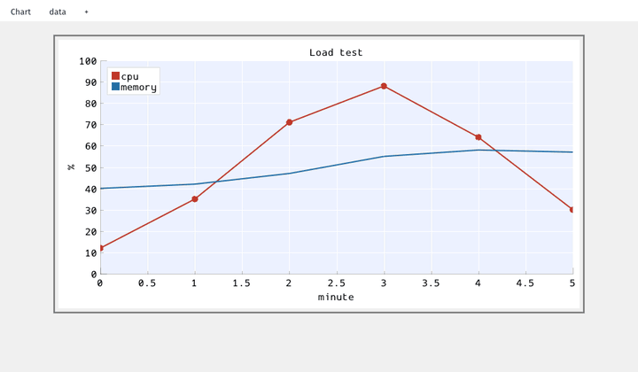
9. Save and download
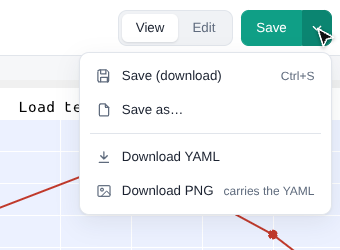
A dot after the file name means unsaved changes. Save (Ctrl+S) writes back to the file you opened where the browser allows it (Chrome, Edge), otherwise it downloads it. The arrow next to it has Save as…, Download YAML and Download PNG: the PNG is a picture anybody can see, and it carries the YAML, so nymph can open it and edit it again.
If the tab closes before you save, the app keeps a draft: open the same chart again and it offers to restore your changes.
10. Share
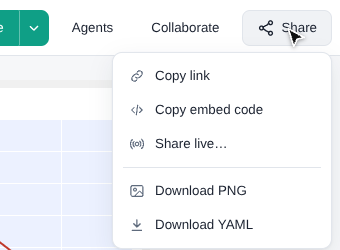
- Copy link gives a link that opens the same chart. A changed chart travels inside the link itself; it is never sent to a server.
- Copy embed code gives HTML that shows the chart, live, in any web page.
- Collaborate (or Share live…) lets other people watch the chart while you edit it, and draw and write notes on it together, browser to browser. See live collaboration.
11. Work with an AI agent
An AI agent you already use (Claude Code, Claude Desktop, Cursor, Gemini CLI) can work on the chart open in the app. Ask it to "connect to the nymph web app": it gives you a short code to type under Agents. Every change it makes is listed there with Undo. The app never asks for an API key and calls no AI service itself. See agents in the web app.
12. Keyboard shortcuts
| Keys | What |
|---|---|
| Ctrl+O, Ctrl+S | Open, save |
| E | Edit (in View) |
| Ctrl+Z, Ctrl+Y | Undo, redo |
| Delete, Ctrl+D | Delete, duplicate the selected part |
| Alt+↑, Alt+↓ | Move the selected part up or down |
| Ctrl+Shift+A | The Agents panel |
| Ctrl+Shift+L | Share live |
| Wheel, drag, double-click | Zoom, pan, fit the chart |
| ? | All shortcuts |
13. Going further
- The web app in detail: every way to open, save and share, Google Drive, installing it and working offline.
- The YAML format and every element.
- Install the command-line tool, or use nymph from Claude or Cursor.
- The demo page: every example, live, next to its PNG.